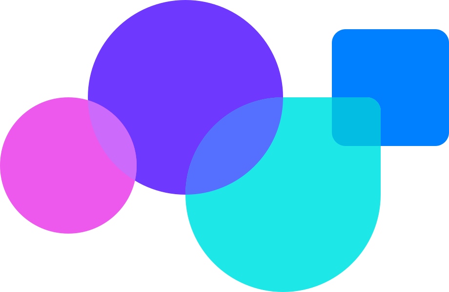
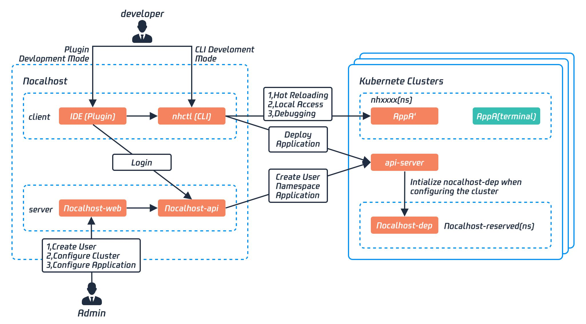

动机
因为微服务带来开发和部署上的灵活性和技术多向性，越来越多的企业选择使用微服务架构构建应用。与此同时，云原生技术和 Kubernetes 的高速发展和普及，也进一步解决了微服务的服务调用的开销、分布式系事务、调试与服务治理等方面的难题。因此，现代应用的发展趋势从原来的 “单体应用 + 云” 朝着 “微服务 + 云原生” 不断演进。
这个应用的发展趋势虽然极大提升了应用的运维和部署的效率，但一个关键节点被忽略了：开发阶段
首先，虽然 Kubernetes 在底层基础架构管理方面表现出色，但带来了额外的复杂性和陡峭的学习曲线。Kubernetes 缺乏面向开发人员的抽象影响了开发体验，降低了开发效率，让开发人员不得不花费大量精力在概念学习、系统配置、环境部署和资源管理上。
另一方面，当今很多企业在进行“微服务化”的实践中，拆分粒度过细，导致微服务数量进一步剧增，各服务间的调用关系也越来越复杂，各种问题在想要新增需求时尤为突出。这导致开发人员和管理人员面临下列难题：
开发人员
如何快速启动完整的开发环境？如何快速调试这些几十甚至数百的微服务？开发的需求依赖于其他同事该怎么联调？
与此同时，容器化技术虽然解决了微服务应用在开发、测试和生产阶段环境一致性的问题，但随之而来的开发反馈循环效率问题让很多开发团队头痛不已。每次代码修改后到可以在线调试，这个过程动辄需要数分钟甚至十分钟的等待时间，极大拖累了开发效率。
因此，尽管企业可以从 “微服务 + 云原生” 中得益，但实际上许多开发团队的开发效率不升反降，并不能体验到云原生技术带来的“降本增效”。
最终结果是，导致人们开始质疑 Kubernetes 对开发人员本身的价值：“为什么要烦恼这些所有的细节而不是专注于代码实现？”。
什么是 Nocalhost?
对于开发人员而言
Nocalhost 是一款基于 IDE 的云原生开发工具，并且提供了云原生的云端解决方案，让云原生开发更高效
-
一键部署开发环境 帮助开发人员一键配置好远端 Kubernetes 开发环境，摆脱在本地计算机上部署复杂开发环境的烦恼。
-
无需重建镜像或重启容器 在开发过程中，任何本地代码修改都会立即同步到远端环境，并不需要重新构建镜像或重启容器，大幅降低开发人员在云原生环境下开发的循环反馈。
-
独立隔离的开发空间 每位开发人员都可以拥有自己的独立开发空间，以确保在开发合和测试过程和过程中不会受到他人的干扰。
-
可视化本地编辑器插件 Nocalhost 为 JetBrains 和 VSCode 提供了易于使用的本地编辑器插件，开发人员无需熟悉 kubectl 命令即可快速在本地计算机上快速对云原生微服务应用进行开发和远程调试。
架构
Nocalhost 的整体工作示意图如下：

IDE 插件
IDE 插件通过 nhctl 和 nocalhost-api 为开发者提供更好的开发体验。主要提供一键化功能，如：进入和退出开发模式，文件同步，端口转发等
nhctl
nhctl 是 Nocalhost 的核心组件
nocalhost-web
nocalhost-web 提供了一个 Web 界面来管理用户，kubernetes 集群，应用程序和 DevSpaces。
nocalhost-api
Nocalhost-api 通过 Kubernetest api-server 管理 kubernetes 集群中的 serviceAccount，应用程序和 DevSpace，并持久存储到数据库中，为 IDE 插件的使用提供数据支持。
nocalhost-dep
-
nocalhost-dep 使用 Kubernetes Admission Webhook（类似于 Istio 注入 Sidecar） 可以控制启动顺序，以解决在 Kubernetes 集群中部署微服务时，无法控制微服务的启动顺序和依赖性的问题。
-
部署应用时，nocalhost-dep 将自动将 InitContainers 注入 workloads。 根据声明的依赖关系，nocalhost-dep 会继续等待依赖服务的可用性。
-
一旦所有依赖服务可用，InitContainer 退出，然后启动容器业务逻辑的容器。 没有重启，这意味着等待启动的时间最少。
下一步
通过 快速开始 便捷的云原生微服务应用的开发过程